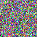

The inbox
Where new notes land.
The inbox lists notes that are not yet in a notebook. Notes sync every minute, and on every save. Offline edits merge when you reconnect. A sync conflict keeps both copies.

| Column | Meaning |
|---|---|
| Title | The first line of the note |
| Updated | When it last changed |